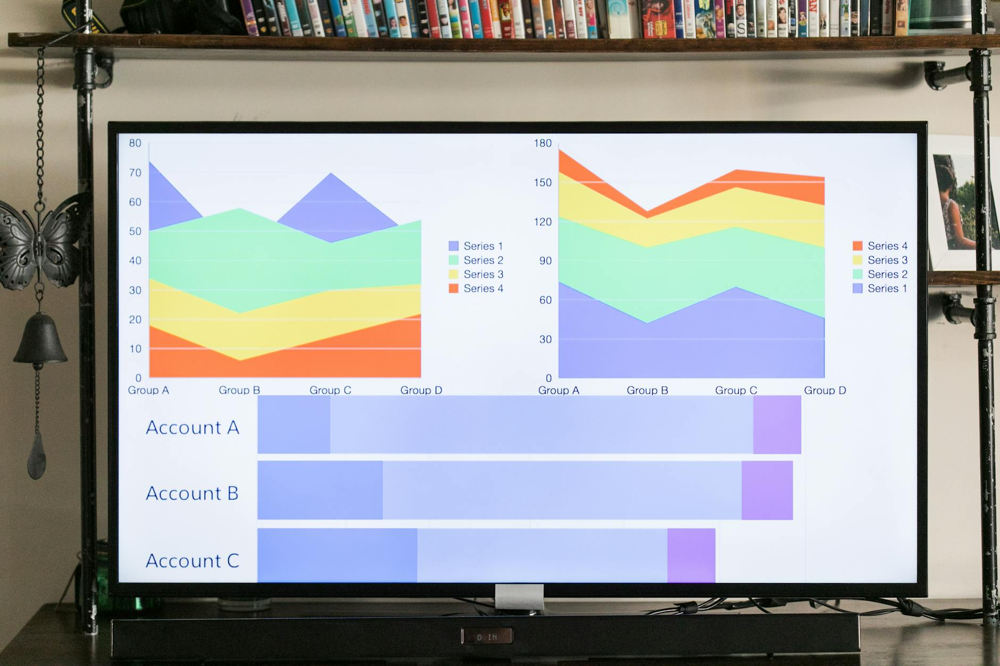

TL;DR
Free AI tools can hinder marketing success by causing inefficiencies and errors. Recognize key failure signs to make smart investment decisions.
Facing Reality: You're Losing Money with Free AI
Digital marketers juggling multiple client campaigns with razor-thin margins often turn to free AI tools, hoping to trim costs. However, these tools can backfire, slow down processes, or degrade accuracy. Consider this: a free AI keyword tool might miss critical insights 30% of the time, leaving your campaigns underperforming by as much as 20%. This cuts into your ROI, risking client trust and retention.
Imagine a scenario where you rely on a free sentiment analysis tool for a major client. You input data from a high-stakes holiday campaign. The tool, plagued by a 25% error rate, misreads key sentiment indicators.
The campaign's tone misses the mark, resulting in a 15% dip in engagement. Overnight, your client questions the value of your services. With paid tools, this risk shrinks significantly, costing a mere fraction of your current spend but saving potential thousands in retained business.
Common wisdom suggests sticking with freebies until the budget increases, but can you afford the hidden costs? When your tools misfire, delays set in, piling up hours of manual work. Saved dollars on software quickly translate into lost revenue and reputation. It's crucial to weigh these factors and decide whether 'free' truly aligns with your professional goals.
When Free Falls Flat: The Hidden Perils
The allure of free AI tools is clear, but their limitations are often hidden until they become barriers. These tools frequently face 40% more downtime than premium alternatives, causing marketers to lose valuable campaign hours.
Integration issues can lead to a 50% increase in time spent on setup rather than strategy. Imagine a marketer relying on a free analytics tool that crashes every Tuesday due to server overload, delaying report generation and client deliverables.
In one scenario, a digital agency with a tight client budget opted for a free AI-driven social media manager. Initial cost savings seemed promising, but within two months, the lack of API integration led to disconnected data streams, forcing manual entries that took three hours weekly. This cycle of reactive problem-solving detracted from creativity and strategic planning.
Lazy advice suggests sticking to free tools for budget savings, but failing to recognize hidden costs—like productivity loss and client dissatisfaction—can erode a campaign’s effectiveness. When every minute counts, the emotional toll of constant firefighting becomes a drain on both innovation and morale, pushing marketers to the edge of burnout.
The Cost of Clinging to Free: Ditch These Tools Now

Here’s a hard truth: Some free tools just aren’t worth the trouble. Let's rank a few common ones:
- Free Version of Hootsuite – Limited analytics lead to poor decision-making. Consider upgrading to the pro version for $29/month to unlock deeper insights.
- Canva Free Plan – Great for basics but lacks advanced features crucial for unique branding. Adobe Spark ($9.99/month) might save your creative edge.
- MailChimp Free Tier – Limits on audiences and templates can stifle reach.
Switching to ConvertKit ($29/month) can transform your email campaigns. While free versions seem tempting, evaluate if the compromise costs more in lost client satisfaction.
Case File: A Campaign Derailed by Free Missteps
Consider Jane, a digital marketer juggling tight budgets. She opted for a free social media scheduling tool, thinking she'd cut costs significantly. During a crucial product launch, the free tool crashed right during peak engagement hours, 3 PM to 6 PM, three days in a row.
This outage led to a 40% drop in engagement and delayed responses to over 25 client queries. The server limitations of free tools can often become traps, as they're not designed to handle high-demand schedules effectively.
Faced with a crisis, Jane had no budget for immediate paid alternatives or rigorous A/B testing. Client complaints tripled, with response times slowing to over 48 hours in some cases. To compensate, Jane worked overtime for a week, escalating stress and reducing her team’s productivity by 30%. For instance, an underperforming ad campaign now demanded unplanned labor, costing 20 additional work hours.
A similar scenario unfolded when a peer relied on a free analytics tool; it misreported key metrics, causing a misallocation of $500 in ad spend. Ironically, the common advice to "always start with free tools" can backfire, as it ignores the hidden costs of downtime and inefficiency.
Jane's experience underscores the critical need for reliable tools, even within tight budgets. Recognizing when to invest in robust paid solutions can mean the difference between a campaign's success and its failure.
Avoiding the Trap: Recognize Warning Signs Early
Free AI tools might initially seem appealing, especially on tight client budgets, but cracks appear quickly. Key warning signs include a 15% increase in error rates, frequent user complaints on usability, and mounting frustration from repetitive fixes.
If you’re spending over 10 hours a week resolving these issues, it's time to reevaluate. For instance, imagine a campaign failing to launch on schedule because the free AI tool can't handle increased data processing—resulting in a 20% client dissatisfaction increase and potential contract loss.
Consider an alternative tool costing $50 per month. The potential savings in time and improved client outcomes can far exceed this expenditure. Don't fall for the "free is good enough" myth. Invest wisely in AI resources to ensure quality and reliability, preventing costly setbacks and ensuring client trust remains secure.
Next Week's Agenda: Make the Shift or Risk the Fall
In the next seven days, conduct a complete audit of your free tools. Pull performance reports and note downtimes or errors. Set up a decision-making checklist focusing on costs vs. ROI, then decide: Upgrade selectively or maintain status quo? Assign a monthly budget for AI tools, even if small—around $50 can expand options significantly. If free tools have plagued your workflow, it’s time for a calculated investment.
FAQ
What are the risks of relying on free AI tools for marketing?
Free tools often lead to inefficiencies, unexpected downtimes, and limited capabilities, which can ultimately cost more than they save.
How do I know when to switch from free to paid AI tools?
When performance suffers, client dissatisfaction increases, or you spend excessive time resolving tool-related issues, it’s time to consider upgrading.
Who is this actually a good fit for?
This is best for readers who need a clear recommendation and can tolerate some tradeoffs.
This article cuts through the clutter, offering real-world advice for marketers facing budget constraints.
Next step
Use the article as a decision point, not just reading material. Your next system matters more than more browsing.
Search more articles
Find related tools, workflows, and guides.
Photo credits
- Photo 1: Josh Sorenson via Pexels
- Photo 2: Lisa from Pexels via Pexels
- Photo 3: RDNE Stock project via Pexels
- Photo 4: ThisIsEngineering via Pexels
- Photo 5: Daniil Komov via Pexels